References
How to make a standardized object (shoe in this case) in to a one of a kind object?
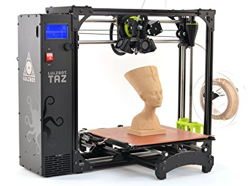The potential of a box : DIY 3D printers.
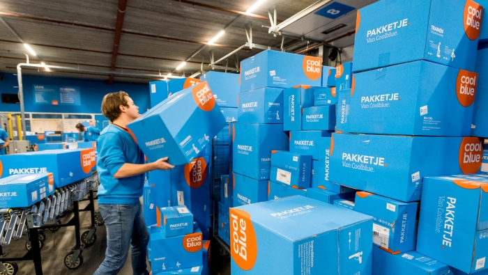As long the content fits in the limitations of the given measurements (the CoolBlue box) the content can be anything.
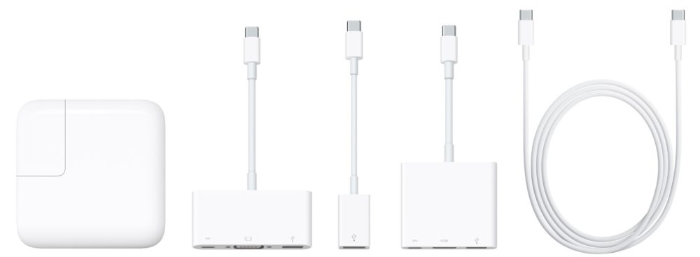"When Apple revealed its newest line of MacBook Pros, featuring an utter lack of the beloved ports so many users have grown dependent on, it was immediately clear that dongles were going to become a problem. A company called Hyper sought to capitalize on the notebooks’ perceived shortcoming and launched an accessory that completely eliminates the need for separate adapters."(reference)
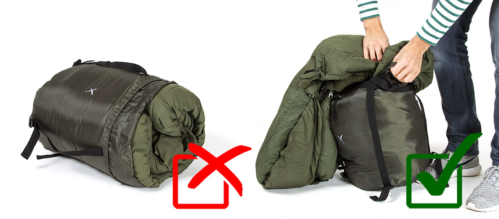TOKYO COMPRESSION by Michael Wolf
Subway travellers in rush hour
Photo by BAS VAN WIERINGEN
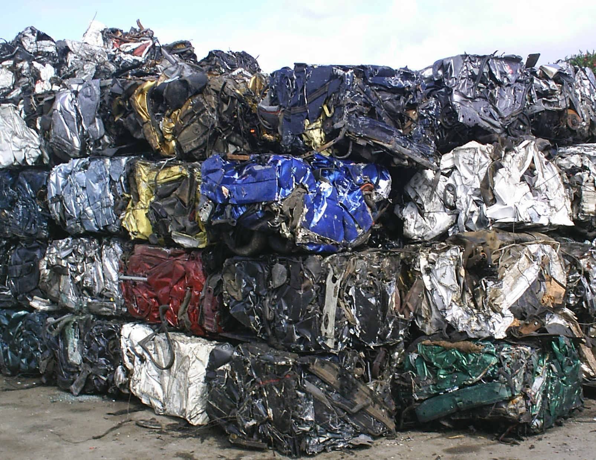pressing cars into blocks - reducing the 'empty' space. economizing space
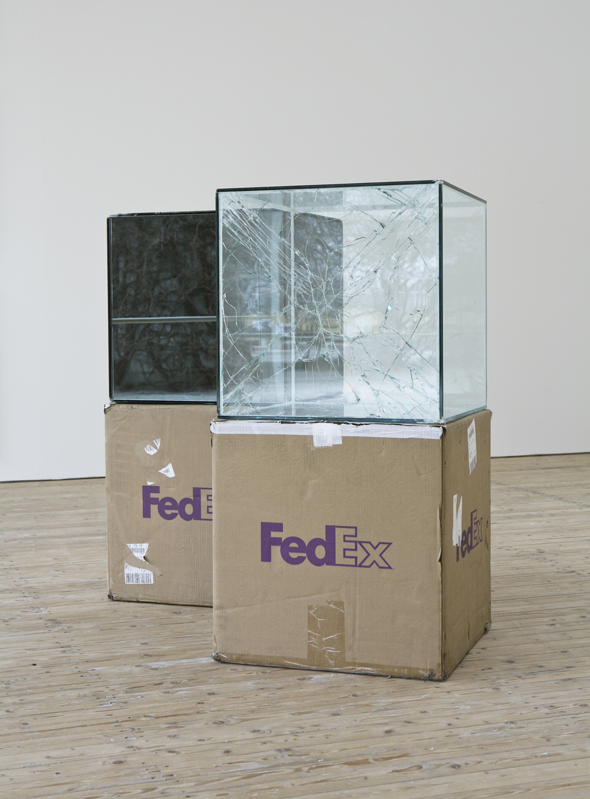Artist WALEAD BESHTY Shipped Glass Boxes Inside FedEx Boxes to Produce Shattered Sculptures
Cat wants to sit in the cardboard box - no matter the size of the box.
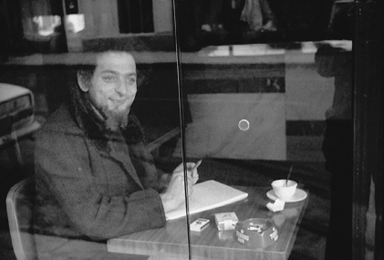GEORGES PEREC
Poging tot uitputtende beschrijving van een plek in Parijs
‘Mijn bedoeling op de volgende pagina’s was vooral al het andere te beschrijven: dat wat je gewoonlijk niet opmerkt, wat er niet toe doet: wat er gebeurt wanneer er niets gebeurt, behalve tijd, mensen, auto’s en wolken.’
Drilling equipment creates burial spots in the walls of underground cemetery under construction in Jerusalem. // Systemizing the death.

SUPERSTUDIO
Superstudio was the name of an architectural movement formed by a group of university students in Italy in the late 60’s that immersed themselves in utopian and democratic ideals and expressed them through film, photomontage and striking visual imagery.
 Organising a group of individuals to pretend
Organising a group of individuals to pretend
Forcing geometry on nature
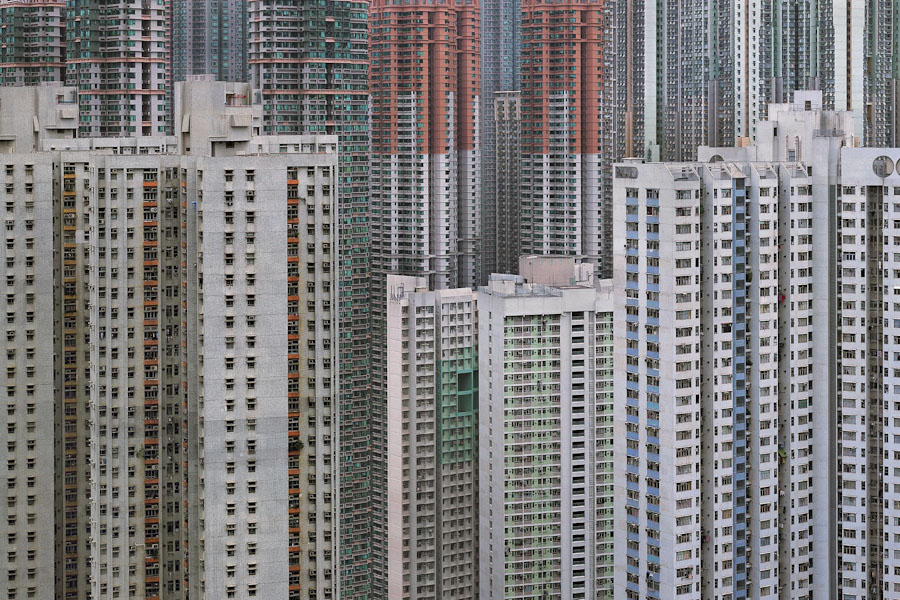
ARCHITECTURE OF DENSITY by Michael Wolf
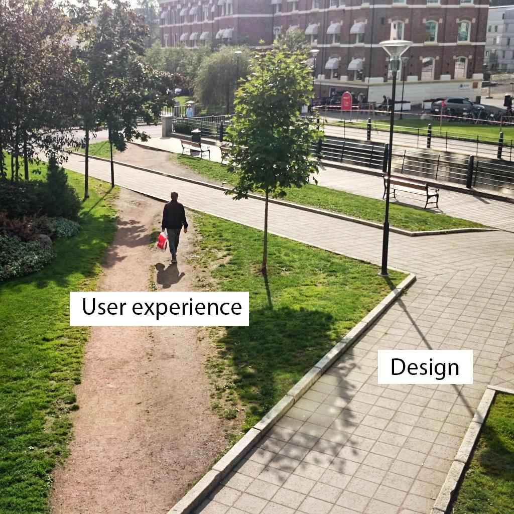Design v.s. Experience
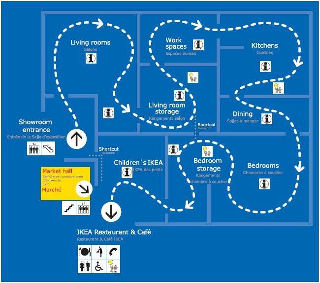IKEA ROUTING
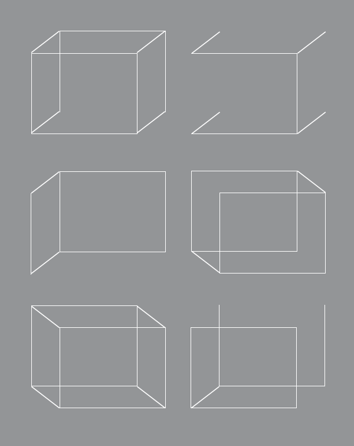 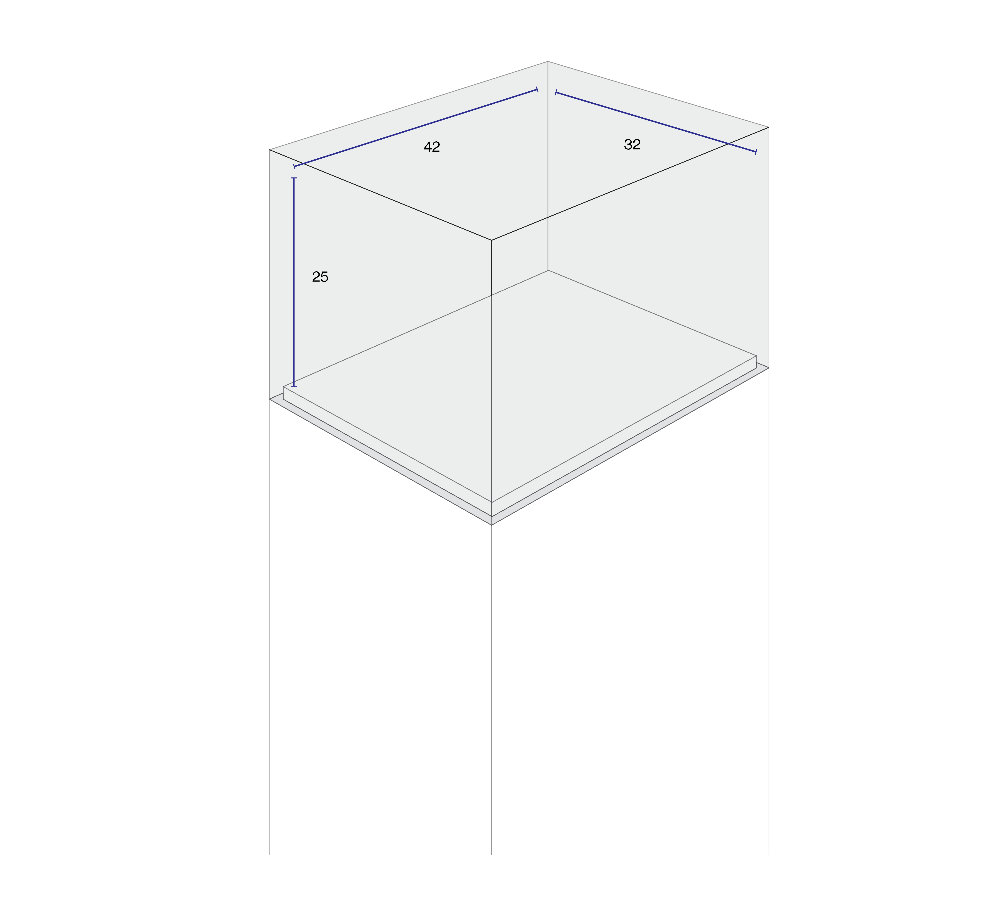 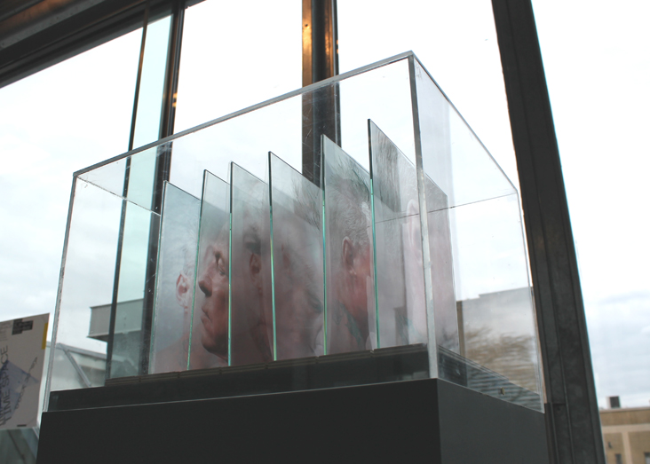PRIORITY LANE Priority Lane is an exhibition space initiated by Max Bouwhuis and Lin Ven. The general aim is to create a stage to investigate how the artistic approach is influenced by the urge to prioritise. The size of the exhibition space is 32 x 42 x 25 cm which is based on the maximum size of free cabin luggage allowed on a Wizz Air flight. A process of choosing, selecting, deleting and refining is obligatory. What will remain of the artistic concept when stripped off, essentialised, or minimised – thus prioritised?
Breathing = natural process. Breathing machine takes over the natural process. mimicing nature with an artifical machine.
1 FEB 2018
Organic movement based on precise organisation.
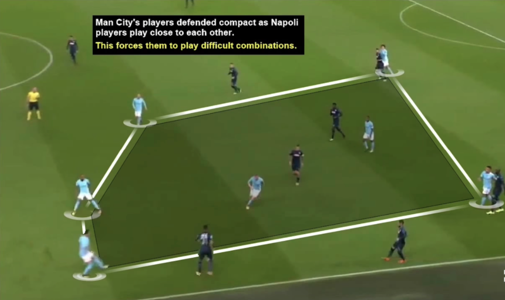1 FEB 2018
22 people running behind a ball. It looks unorganised, even bestial sometimes. But the whole game is based on systems and tactics.
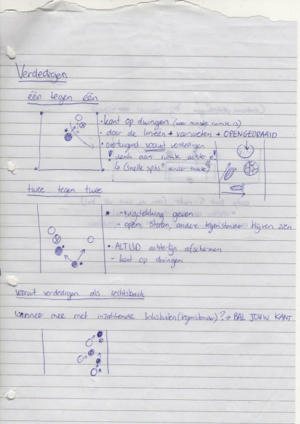My own notes (2010)
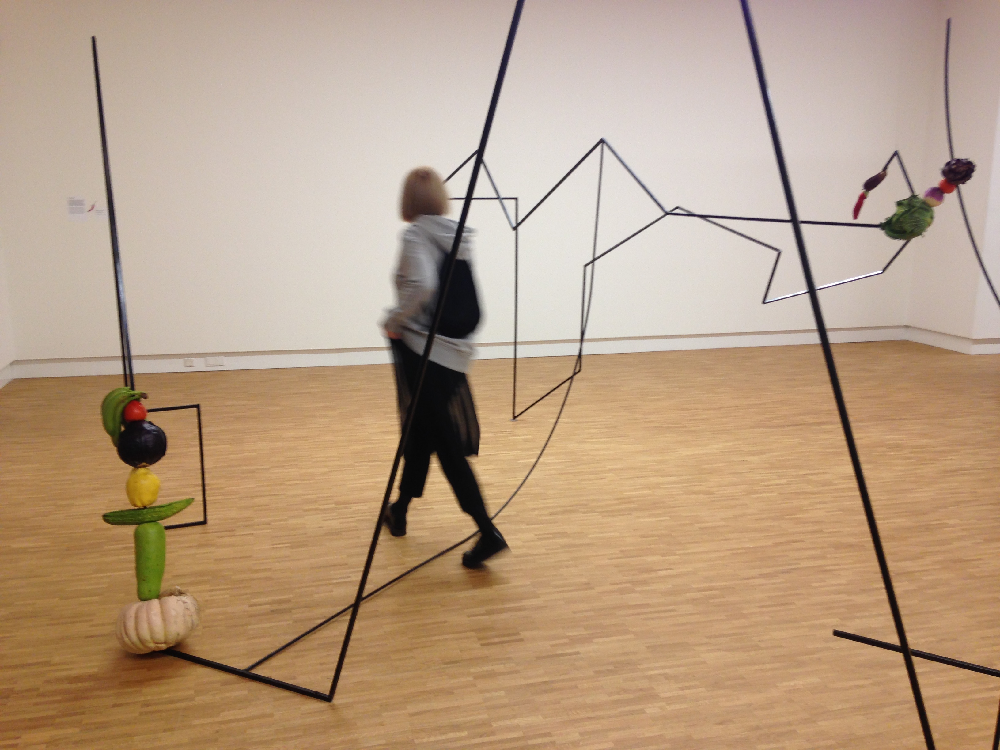31 JAN 2018
MARIA BIGAJ
Using organic materials like fruit and vegetables, Polish artist Maria Bigaj (b. 1991) makes poetic sculptures in which she explores the natural process of transformation and decay. She also manages to create some confusion by playing with the properties of the material and giving it a new twist. Thus, a melon or pumpkin appears to be a stable connecting element, while steel bent into geometric shapes seems fragile. But what happens after a time? Bigaj subtly subverts our assumptions, playing with the unexpected results of decay, prompting us to look more closely.
30 JAN 2018
THE (EXTRA) ORDINARY ENCYCLOPEDIA by Suzanne Bakkum
process // images // references // archive //
Notes / Sketches
NOTES 8 FEB 2018
- - STANDARDIZATION of space
- - volume / limitation
- The use of the words 'standardization' and 'standardisation' from 1800 till 2008 found in books on Google Books
- "The spirit of the Roaring Twenties was marked by a general feeling of novelty associated with modernity and a break with traditions. Everything seemed to be feasible through modern technology. New technologies, especially automobiles, moving pictures, and radio, brought "modernity" to a large part of the population." (reference)
NOTES 2 FEB 2018
- POTENTIAL of space
- volume / limitation 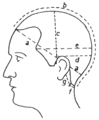
NOTES 1 FEB 2018
- things as they are planned v.s. Things that happen to be
- traces of the grid
- What happens when I apply my metaphoric visuals to real situations?
- could it become characters? [reference: The Magnetic North]
- design v.s. user experience
NOTES 30 JAN 2018
- forcing a grid on organic matter
- breaking the grid
- personilising defined spaces (interior of your living space)
- creating space within set restrictions
- appropriating space
- dynamics between organic shapes/primal behavior and the constructed
- proposing to experience a given space in a different way
30 JAN 2018
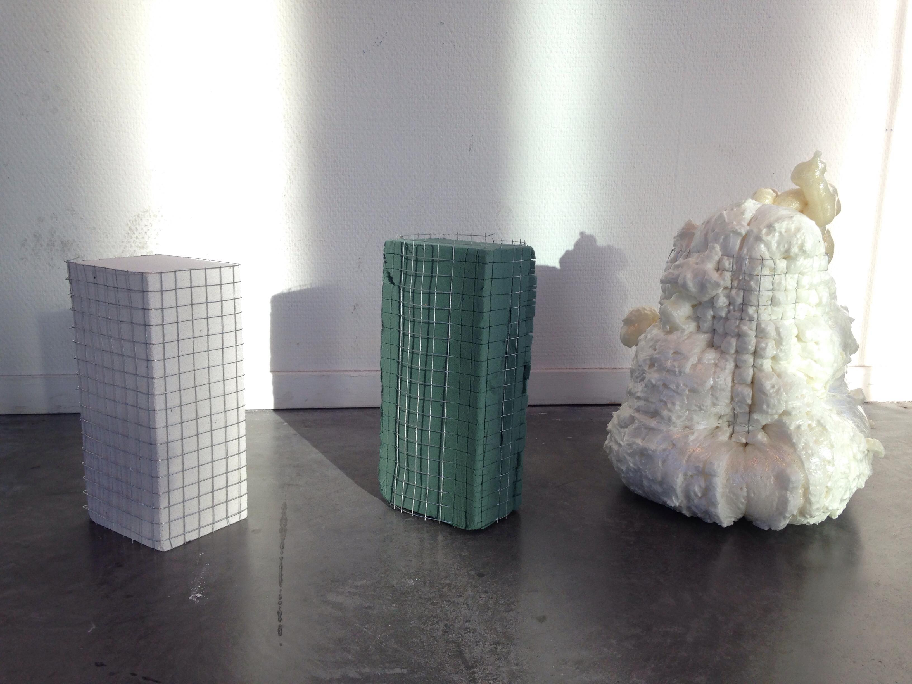30 JAN 2018
What happens when you force a grid on organic matter? What if the matter doesn't want (or isn't able) to function within the grid?